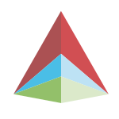

<nav class="navbar navbar-expand navbar-light bg-light mb-5">
  <div class="w-100">
    <div class="row align-items-center">
      <div class="col-lg-3 col-sm-6 text-center text-sm-left my-2 my-lg-0">
        <a url="/" class="navbar-brand logo text-left">
          
          <div class="d-inline-block align-middle logo-title">
            <span>Akili</span>
            <span class="text-success">example site</span>
            <small class="d-block text-muted ellipsis">${ this.post? this.post.title: 'tagline place' }</small> 
          </div> 
        </a>        
      </div> 
      <div class="col-lg-5 col-sm-6 my-2 my-lg-0">
        <div class="navbar-nav justify-content-center justify-content-sm-end justify-content-lg-center">
          <a class="nav-link ${ utils.class({active: this.isActiveState}) }" state="app.posts">Posts</a>
          <a class="nav-link ${ utils.class({active: this.isActiveState}) }" state="app.users">Users</a>
        </div>
      </div>
      <div class="col-lg-4 col-sm-12 text-center text-lg-right my-2 my-lg-0 px-4">
        <div class="row">
          <div class="col-sm-6 col-xs-12">
            <a href="https://akilijs.com/docs/architecture" target="_blank" class="btn btn-outline-primary form-control">
              <i class="fa fa-file-alt"></i> Description
            </a>
          </div>
          <div class="col-sm-6 col-xs-12 mt-3 my-sm-0">
            <a href="https://github.com/ortexx/akili-example" target="_blank" class="btn btn-outline-info form-control">
              <i class="fab fa-github"></i> Github
            </a>
          </div>
        </div>        
      </div>
    </div>  
  </div>
</nav>
<div class="container pb-5">
  <route></route>
</div>

